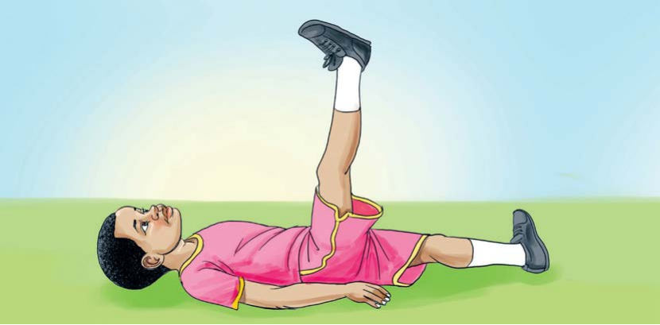

Tujinyooshe miili yetu
Jinsi ya kujinyoosha kwa kulala na kunyanyua mguu mmoja
- Kaa chini.
- Lala kwa mgongo.
- Nyoosha mikono ikiwa chini.
- Nyanyua mguu mmoja.
- Rudisha mguu chini na nyanyua mguu mwingine.
- Rudia mara tano kwa kila mguu.

Tujinyooshe miili yetu
